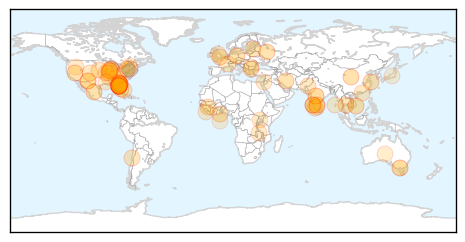
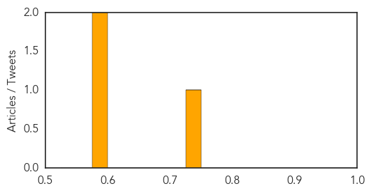

Unknown
30-Day Web Trend
0 alerts, 0 warnings

30-Day Twitter Trend
0 alerts, 0 warnings

Article Locations
Article Confidences

Top Articles:
- 0.985
- New person tests positive for active case of TB at Frank Macias Elementary
- 0.967
- BREAKING: New Airborne AIDS Virus Infects Thousands, Killing Over 200 in China
- 0.967
- Floridians urged to avoid leprosy-infected armadillos
- 0.966
- Florida Reports Higher-Than-Usual Number Of Leprosy Cases, Likely Caused By Armadillo Contact
- 0.959
- One Quang Nam person tests positive for diphtheria
- 0.951
- Armadillos believed to have caused LEPROSY in Florida patients
- 0.944
- Health providers to track water-borne illnesses following contamination
- 0.917
- Chicago Tribune
- 0.917
- Chicago Tribune
- 0.917
- Chicago Tribune
- 0.917
- Chicago Tribune
- 0.917
- Chicago Tribune
- 0.917
- Chicago Tribune
- 0.917
- Chicago Tribune
- 0.917
- Chicago Tribune
- 0.891
- Second active TB case at Frank Macias Elementary reported; no additional testing needed, officials say
- 0.889
- High Number of Leprosy Cases Due to Armadillos? How to Prevent Hansen’s Disease
- 0.888
- Florida Residents Urged To Avoid Armadillos Due To Rise In Leprosy Cases
- 0.888
- Nine Leprosy Cases Linked To Armadillos In Florida
- 0.880
- Swine fever the new normal?
- 0.874
- Armadillo exposure cited in Florida leprosy diagnosis
- 0.874
- Armadillo exposure cited in Florida leprosy diagnosis
- 0.848
- Suspected Mers Case in Rayong
- 0.846
- Florida residents urged not to hang out with armadillos, will get leprosy
- 0.840
- Leprosy spike in Florida caused by armadillos: officials
- 0.822
- Sierra Leone: United Nations Ebola Outbreak Update June 2015 -38th Edition
- 0.796
- Guinea Worm Phasing Out
- 0.793
- Winnebago hospital neglect led to 1 patient death, endangered 9 others
- 0.789
- Floridians urged to avoid leprosy-infected armadillos
- 0.787
- Armadillos Cause Leprosy in Florida, Health Officials Say
- 0.783
- Lyme disease advocates sound alarm on B.C. tests but medical experts disagree
- 0.780
- Gonzalo Higuaín se pelea con hincha por penal fallado contra Chile
- 0.778
- Ghana adopts tough measures to contain bird flu
- 0.750
- Wisconsin Law Journal - WI Legal News & Resources
- 0.707
- Plague confirmed in Fremont County fleas linked to prairie dog colony die off
- 0.704
- Medical camps set up in flood-affected districts
- 0.702
- French Teenager’s HIV Kept in Remission Without Drugs
- 0.701
- Florida residents reportedly urged to keep away from armadillos over leprosy fears
- 0.698
- Melbourne hotel's high tea salmonella outbreak reaches 17 confirmed cases
- 0.698
- Infant mortality deaths in DK to be audited
- 0.697
- White coats spread infection: Doc
- 0.686
- Bahamas becomes PAHO/WHO certified on elimination of rubella and CRS
- 0.685
- Are Spitting Armadillos Responsible For Surge In Florida Leprosy Cases?
- 0.683
- Government urged to revert to old system of Isolation wards for TB patients
- 0.680
- Florida Officials Blame Leprosy Spike on Armadillos, Warn People to Stay Away
- 0.678
- S. Korea may lose nearly $14b in tourism revenue to Mers, Asia News & Top Stories
- 0.655
- Varna district governor convenes urgent meeting on anthrax disease
- 0.655
- Infected meat tested anthrax positive
- 0.649
- Mangaluru doctor wants ban on white coats
- 0.649
- Sorry, deze pagina kon niet gevonden worden.
Showing top 50 articles...
Top Tweets:
- 0.674
- RT: H5N1 avian flu is spreading across West African poultry farms stoking fears the virus will jump from birds to humans http://…
Mold/Fungal
30-Day Web Trend
2 alerts, 0 warnings
30-Day Twitter Trend
0 alerts, 0 warnings

Article Locations
Article Confidences
Top Articles:
Top Tweets:
-
No tweets found for Jul 22, 2015